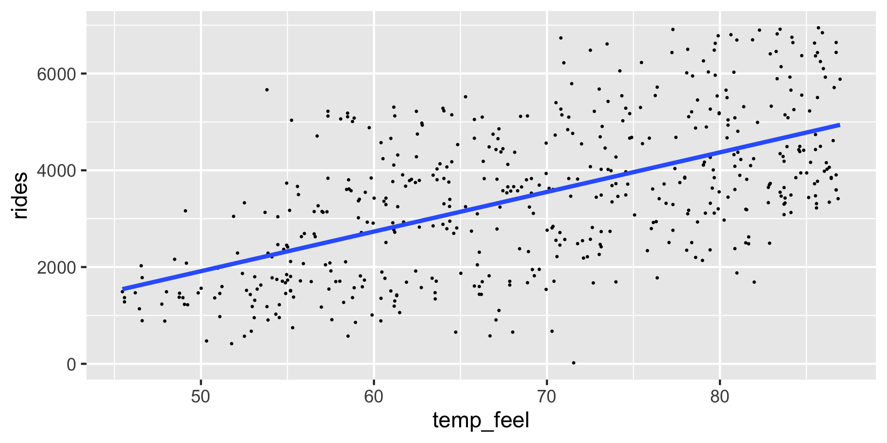

bike_model <- stan_glm(rides ~ temp_feel, data = bikes,
family = gaussian,
prior_intercept = normal(5000, 1000),
prior = normal(100, 40),
prior_aux = exponential(0.0008),
chains = 4, iter = 5000*2, seed = 84735, refresh = FALSE)
bike_model_df <- as.data.frame(bike_model)
set.seed(84735)
predict_75 <- bike_model_df %>%
mutate(mu = `(Intercept)` + temp_feel*75) %>%
mutate(y_new = rnorm(20000, mu, sigma))Evaluating Regression Models
Dr. Mine Dogucu
The notes for this lecture are derived from Chapter 10 of the Bayes Rules! book
- How fair is the model? How was the data collected? By whom and for what purpose? How might the results of the analysis, or the data collection itself, impact individuals and society? What biases or power structures might be baked into this analysis?
- How wrong is the model? George Box famously said: “All models are wrong, but some are useful.” What’s important to know then is, how wrong is our model? Are our model assumptions reasonable?
- How accurate are the posterior predictive models?
Checking Model Assumptions
\[Y_i | \beta_0, \beta_1, \sigma \stackrel{ind}{\sim} N(\mu_i, \sigma^2) \;\; \text{ with } \;\; \mu_i = \beta_0 + \beta_1 X_i .\]
- Conditioned on \(X\), the observed data \(Y_i\) on case \(i\) is independent of the observed data on any other case \(j\).
- The typical \(Y\) outcome can be written as a linear function of \(X\), \(\mu = \beta_0 + \beta_1 X\).
- At any \(X\) value, \(Y\) varies normally around \(\mu\) with consistent variability \(\sigma\).
Independence
When taken alone, ridership \(Y\) is likely correlated over time – today’s ridership likely tells us something about tomorrow’s ridership. Yet much of this correlation, or dependence, can be explained by the time of year and features associated with the time of year – like temperature \(X\). Thus, knowing the temperature on two subsequent days may very well “cancel out” the time correlation in their ridership data.
Linearity and Constant Variance
The relationship between ridership and temperature does appear to be linear. Further, with the slight exception of colder days on which ridership is uniformly small, the variability in ridership does appear to be roughly consistent across the range of temperatures \(X\).
Posterior predictive check
Consider a regression model with response variable \(Y\), predictor \(X\), and a set of regression parameters \(\theta\). For example, in the model above \(\theta = (\beta_0,\beta_1,\sigma)\). Further, let \(\left\lbrace \theta^{(1)}, \theta^{(2)}, \ldots, \theta^{(N)}\right\rbrace\) be an \(N\)-length Markov chain for the posterior model of \(\theta\). Then a “good” Bayesian model will produce predictions of \(Y\) with features similar to the original \(Y\) data. To evaluate whether your model satisfies this goal:
- At each set of posterior plausible parameters \(\theta^{(i)}\), simulate a sample of \(Y\) values from the likelihood model, one corresponding to each \(X\) in the original sample of size \(n\). This produces \(N\) separate samples of size \(n\).
- Compare the features of the \(N\) simulated \(Y\) samples, or a subset of these samples, to those of the original \(Y\) data.
first_set <- head(bike_model_df, 1)
beta_0 <- first_set$`(Intercept)`
beta_1 <- first_set$temp_feel
sigma <- first_set$sigma
set.seed(84735)
one_simulation <- bikes %>%
mutate(mu = beta_0 + beta_1 * temp_feel,
simulated_rides = rnorm(500, mean = mu, sd = sigma)) %>%
select(temp_feel, rides, simulated_rides)
head(one_simulation, 2) temp_feel rides simulated_rides
1 64.72625 654 3934.017
2 49.04645 1229 1691.681One posterior simulated dataset of ridership (light blue) along with the actual observed ridership data (dark blue)
observed value: \(Y\)
posterior predictive median: \(Y'\)
predictive error: \(Y - Y'\)
Let \(Y_1, Y_2, \ldots, Y_n\) denote \(n\) observed outcomes. Then each \(Y_i\) has a corresponding posterior predictive model with median \(Y_i'\) and median absolute deviation \(\text{mad}_i\). We can evaluate the overall posterior predictive model quality by the following measures:
The median absolute error
mae\[\text{mae} = \text{median}_{i \in \{1,2,\ldots,n\}} |Y_i - Y_i'|\]
The scaled median absolute error
scaled_mae\[\text{mae scaled} = \text{median}_{i \in \{1,2,\ldots,n\}} \frac{|Y_i - Y_i'|}{\text{sd}_i}\]
within_50andwithin_95measure the proportion of observed values \(Y_i\) that fall within their 50% and 95% posterior prediction intervals respectively.
The k-fold cross validation algorithm
- Create folds.
Let \(k\) be some integer from 2 to our original sample size \(n\). Split the data into \(k\) folds, or subsets, of roughly equal size.
- Train and test the model.
- Train the model using the first \(k - 1\) data folds combined.
- Test this model on the \(k\)th data fold.
- Measure the prediction quality (eg: by MAE).
- Repeat.
Repeat step 2 \(k - 1\) times, each time leaving out a different fold for testing.
- Calculate cross-validation estimates.
Steps 2 and 3 produce \(k\) different training models and \(k\) corresponding measures of prediction quality. Average these \(k\) measures to obtain a single cross-validation estimate of prediction quality.
fold mae mae_scaled within_50 within_95
1 1 989.9329 0.7697031 0.46 0.98
2 2 965.5983 0.7445972 0.42 1.00
3 3 951.0937 0.7304896 0.42 0.98
4 4 1018.7631 0.7909376 0.46 0.98
5 5 1161.5577 0.9083204 0.38 0.96
6 6 937.7574 0.7328653 0.46 0.94
7 7 1270.1276 1.0058929 0.32 0.96
8 8 1112.0273 0.8601165 0.36 1.00
9 9 1099.4819 0.8680814 0.40 0.92
10 10 786.7470 0.6057405 0.56 0.96